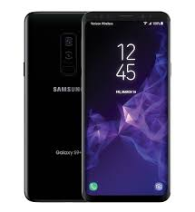

an intro
This will be an intro to my blog here we will talk about new tecnology and fitnes gaming and lots more.
The Galaxy S9 is here and the criticism you will hear is Samsung hasn’t changed anything. But don’t believe it. The reality is Samsung made a number of intelligent alterations and upgrades that are worthy of your consideration. Whether they are enough, is the bigger question.
Here’s everything you need to know…

Design & Display - Necessary Refinements
Few would disagree that the Galaxy S8 was one of 2017’s most attractive smartphones, but it had several ergonomic and structural problems all of which Samsung has addressed with the Galaxy S9. The hint comes from the change in thickness and weight:
Galaxy S8 - 148.9 x 68.1 x 8.0 mm ( 5.86 x 2.68 x 0.31-inch), 155g (5.36oz)
Galaxy S9 - 147.7 x 68.7 x 8.5 mm (5.81 x 2.70 x 0.33-inch), 163g (5.75 oz)
Yes, the Galaxy S9 has increased both. Where this extra bulk comes from are substantial improvements to durability: there’s stiffer aluminium in the chassis, 20% greater drop protection and thicker glass in the display. IP68 water and dust resistance also remains while Samsung continues to defy convention retaining favourites like the headphone jack and microSD expandable storage (now compatible with 400GB cards).
Meanwhile the Galaxy S9 is slightly shorter than the Galaxy S8 because its top and bottom bezels are fractionally thinner. This actually gives the Galaxy S9 a higher screen-to-body ratio than the iPhone X thanks to the latter’s polarising notch.
Elsewhere Samsung has fixed glaring errors/omissions. The idiotically placed rear fingerprint reader of the Galaxy S8 is now positioned centrally under the camera (like every normal rear-mounted phone) and an amplified earpiece means it now has dual stereo speakers like rivals, with the added bonus of Dolby Atmos support.
There’s a new launch colour as well - Lilac Purple - which joins Midnight Black, Coral Blue and (in some regions) Titanium Gray. This selection should expand further in the coming months.
No these are not life-changing alterations, but they are sensible. The Galaxy S9 fixes what the Galaxy S8 got wrong while holding onto the features which separate it from Apple’s iPhone X and Google’s Pixel 2.
Display - The Best You Can Buy
Every year Samsung sets a new standard and this year is no different. To quote specialist reviewer DisplayMate: the Galaxy S9 display is "virtually indistinguishable from perfect".
Samsung
The Galaxy S9 has the best smartphone display on the market
While the display size (5.8-inches) and resolution (1440p, though 1080p by default) are unchanged, improvements include a 20% increase in brightness, class leading colour accuracy and the lowest mobile screen reflectance ever recorded. Samsung has also delivered the most consistent OLED display seen on a phone with barely any colour shift at 30 degrees.
For the average customer, I’d say these achievements are not the biggest talking point of the Galaxy S9, simply because Samsung screens have been so good for so long they are well past the point of customer discontent. Instead, the victory is more for marketing as Samsung briefly lost the top display title to the iPhone X. And yes, Samsung made that display for Apple as well.
Cameras - A Story Of Dual And Singular
This is easily the biggest upgrade and biggest controversy for the Galaxy S9.
The upgrade is a potentially game-changing ‘dual aperture’ 12 megapixel rear camera which can shift between F2.4 (for more detail in well-lit shots) and F1.5 (for low light). Switching between these modes will be automatic as standard, but a Pro mode gives aspiring photographers manual control over both. You can read more about their differences here.
Samsung
Dual rear cameras on come on the Galaxy S9 Plus (pictured), but not the Galaxy S9
The other big addition is a 960fps ‘Super Slo-Mo’ mode when shooting video at 720p. This can stretch 0.2 seconds into 6 seconds of footage and, while Apple’s new iPhones and Sony’s Xperia XZ Premium can match this, Samsung adds a smart auto-detect system so the slow-mo begins only as the moment an object passes through the specific point you pre-select on the display. Smart.
Meanwhile the controversy comes from Samsung treating the Galaxy S9 differently to the larger ‘Plus’ model for the first time. The Galaxy S9 Plus gets a second telephoto 12 megapixel rear camera and in missing out, the Galaxy S9 therefore loses 2x optical zoom and Portrait Mode. The latter a hugely popular feature on the iPhone X and Pixel 2, and Google’s phone even achieves this using only a single rear camera.
Samsung
Super Slo-Mo can automatically pick the right moment to slow a video
There also appears to have been no obvious change to the Galaxy S9’s front-facing camera. It remains 8 megapixels with the same F1.7 aperture as the Galaxy S8 and that phone already lagged behind selfies from the Pixel 2 (which can manage Portrait Mode there as well). I’ve asked Samsung for more details.
Boosted Biometrics
Whether you love or hate Face ID, the iPhone X’s facial recognition feature has forced Android handset makers to compete. And ‘Intelligent Scan’ is the Galaxy S9’s attempt to meet Face ID head-on.
It works by switching between facial recognition and iris scanning automatically to improve speed and reliability (the latter works in darkness). Personally, I doubt Intelligent Scan can beat Face ID in a head-to-head (the Galaxy S9 omits core elements of the Face ID system such
Performance - Splits Cause Problems
Once again Samsung will sell the Galaxy S9 in two different variants depending where you live:
Galaxy S9 (US) - Qualcomm Snapdragon 845 octa-core chipset (4x 2.7 GHz Kryo 385 Gold & 4x1.7 GHz Kryo 385 Silver CPUs), Adreno 630 GPU
Galaxy S9 (Europe and Asia) - Exynos 9810 (4x 2.8 GHz Mongoose M3 & 4x1.7 GHz Cortex-A55 CPUs), Mali-G72 MP18 GPU
This should be familiar:
Galaxy S8 (US) - Qualcomm Snapdragon 835 octa-core chipset (4x 2.35GHz and 4x 1.9GHz Kryo CPUs), Adreno 540 GPU; 4GB of RAM
Galaxy S8 (Europe and Asia) - Exynos 8895 (4x 2.3 GHz & 4x 1.7 GHz CPUs), ARM Mali-G71 MP20 GPU; 4GB of RAM
Overall you’re looking at a circa 20% boost to performance from the Galaxy S9 and a 30% improvement in efficiency (which has a knock-on for battery life - more later). A potential talking point is the Exynos version looks to be superior, but Samsung’s infamous bloatware (more next) is more likely to be a bigger factor in overall performance.
It is also worth noting the Galaxy S9 retains 4GB of RAM like the Galaxy S8, but the Galaxy S9 Plus will have 6GB. This is primarily to power the Plus model’s dual camera configuration though it aids multitasking as well, so it’s disappointing Samsung hasn’t given the same boost to both new models.
Less headline-worthy, but worth noting is the Galaxy S9 boosts its cellular performance to the Galaxy S8. The gains are primarily theoretical (1200 megabit per second (Mbps) downloads, 200 Mbps uploads Vs. 1024/150 Mbps in the Galaxy S8) but they clearly future proof the phone. Elsewhere 802.11ac WiFi and Bluetooth 5.0 are unchanged.